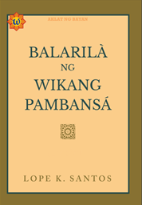

Palatitikan
Palatitikan
Ito ay siyáng katipunan ng mga tuntunin sa mabuti’t wastóng pagsulat.[91]
Baybayin
Ito ang sinaunang sistema ng panulat bago pa man dumating ang mga Espanyol dito sa ating bansa.
Sa labimpitong itó’y tatlo (3) ang patinig () at labing-apat (14) ang katinig (b, k, ,d, g, h, l, m, n, ng, p, s, t, w, y).
Ang mga e/i at o/u ay iisa sa baybayin. Ang mga katinig naman ay kasunod ang titik na "a" kapag walang kudlit.
Nilalagyan ng kudlit ang mga katinig sa taas nila upang maging e/i ang susunod na titik, at sa itaas naman para maging o/u ang kasunod. Halimbawa, ang salitang dito kapag isusulat sa baybayin ay: .
Krus naman sa baba ang inilalagay kung walang kasunod na patinig ang katinig. Hal.: hindi =
Ito ang sinaunang sistema ng panulat bago pa man dumating ang mga Espanyol dito sa ating bansa.
Sa labimpitong itó’y tatlo (3) ang patinig () at labing-apat (14) ang katinig (b, k, ,d, g, h, l, m, n, ng, p, s, t, w, y).
Ang mga e/i at o/u ay iisa sa baybayin. Ang mga katinig naman ay kasunod ang titik na "a" kapag walang kudlit.
Nilalagyan ng kudlit ang mga katinig sa taas nila upang maging e/i ang susunod na titik, at sa itaas naman para maging o/u ang kasunod. Halimbawa, ang salitang dito kapag isusulat sa baybayin ay: .
Krus naman sa baba ang inilalagay kung walang kasunod na patinig ang katinig. Hal.: hindi =
Ang Alapabetong Filipino
Ang Alpabetong Filipino naman ang ginagamit nating alpabeto ngayong araw. Ang pagkakasunod-sunod ng mga titik ay:
Dalawampu't walo na ang titik nito matapos dagdagan ng mga titik na: C, F, J, Ñ, Q, V, X, at Z.
Ayon sa KWF o Komisyon sa WIkang Filipino, noong 1987 ay nalathalang dalawampu’t walo (28) ang mga titik sa gabay na Alpabeto at Patnubay sa Ispeling ng Wikang Filipino ng Linangan ng mga Wika sa Pilipinas, ang binagong pangalan ng Surian ng Wikang Pambansa. Dito noon tinanggap ang mga nadagdag na letra bilang parte ng Alpabetong Filipino.
[91]
Ang Alpabetong Filipino naman ang ginagamit nating alpabeto ngayong araw. Ang pagkakasunod-sunod ng mga titik ay:
- A,
- B,
- C,
- D,
- E,
- F,
- G,
- H,
- I,
- J,
- K,
- L,
- M,
- N,
- NG,
- O,
- P,
- Q,
- R,
- S,
- T,
- U,
- V,
- W,
- X,
- Y,
- Z
- a,
- b,
- c,
- d,
- e,
- f,
- g,
- h,
- i,
- j,
- k,
- l,
- m,
- n,
- ng,
- o,
- p,
- q,
- r,
- s,
- t,
- u,
- v,
- w,
- x,
- y,
- z
Dalawampu't walo na ang titik nito matapos dagdagan ng mga titik na: C, F, J, Ñ, Q, V, X, at Z.
Ayon sa KWF o Komisyon sa WIkang Filipino, noong 1987 ay nalathalang dalawampu’t walo (28) ang mga titik sa gabay na Alpabeto at Patnubay sa Ispeling ng Wikang Filipino ng Linangan ng mga Wika sa Pilipinas, ang binagong pangalan ng Surian ng Wikang Pambansa. Dito noon tinanggap ang mga nadagdag na letra bilang parte ng Alpabetong Filipino.
[91]
Pagbabagong Morpoponemiko
Ito ang pagbabago sa anyo at bigkas ng mga salita na dulot ng pagdaragdag ng panlapi o pagtatambal ng mga ponema upang bumuo ng bagong salita.
Nahahati ito sa limang (5) uri: Asimilasyon, Metatesis/Paglilipat, Maypalit, Maykaltas, at Pagpapaikli.
[111][113]
Asimilasyon
Ito ay pagbabago sa morpema na inihahalintulad sa katabing ponema o tunog nito. Ang panlaping nagtatapos sa -ng ay maaring maging -m o -n depende sa kasunod nitong titik.
Mayroon itong dalawang uri: Asimilasyong Ganap, at Asimilasyong Parsyal o Di-ganap
- Asimilasyong Ganap ang tawag kapag ang unang titik ng salitang-ugat ay napalitan.
- Kung ang kasunod na titik ng panlaping -ng- ay alinman sa d, l, r, s, t, ito ay nagiging n. Bukod diyan, natatanggal din ang -ng.
- Kung nagsisimula naman ang salitang-ugat sa titik b o p, ito ay pinapalitan ng titik m; at, ang panlaping -ng ay inaalis.
- Halimbawa:
- pang + baril = pamaril
- mang + salamin = manalamin
- pang + takot = panakot
- mang + pitas = mamitas
- Asimilasyong Parsyal o 'Di-Ganap naman ang tawag kapag walang nagbago sa salitang-ugat.
- Napapalitan lamang ang g sa panlaping -ng- ng mga titik m o n.
- Katulad ng Ganap na Asimilasyon, m ang gagamitin kung ang sinusundang titik nito ay b o p; at n naman kung ito ay sinusundan ng alinman sa mga titik d, l, r, s, t.
- Halimbawa:
- sing + tindi = sintindi
- pang + laban = panlaban
- sing + palad = simpalad
- kasing + bait = kasimbait
Paalala: Nananatili ang mga panlaping nagtatapos sa ng kapag ang kasunod na letra ay mga katinig na k, m, n, ng, w, y.
Dinaragdagan naman ng gitling (-) kung ang kasunod ay patinig (a, e, i, o, u).
Paglilipat o Metatesis
Nangahuhulugan itong paglilipat ng posisyon ng mga ponema.
- Kapag nagsisimula sa l o y ang isang salitang-ugat at nilagyan ng gitlaping -in, nagkakapalit ang i at n.
- Halimbawa:
- -in- + yakag = niyakag
- -in- + layon = nilayon
- -in- + lipad = nilapad
- -in- + yaya = niyaya
Pagpapalit
Ito ay tumutukoy sa ponemang nagbabago o napapallitan sa pagbuo ng salita.
- o at u
- Ayon sa Ortograpiyang Pambansa noong 2013[114], kapag ang salitang-ugat na nagtatapos sa patinig o ay inulit, hindi ito papalitan ng patinig u at gagamitan ng gitling sa pag-uugnay.
- Halimbawa:
- bagong-bago
- sino-sino
- linggo-linggo
- e at i
- Katulad sa naunang mga patinig, sa pag-uulit ng salitang nagtatapos sa e, hindi ito ginagawang i at pinag-uugnay gamit ang gitling.
- Halimbawa:
- babaeng-babae
- salbaheng-salbahe
- d at r
- Napapalitan ang d ng r kung ang sinusundang titik nito ay nagtatapos sa patinig o malapatinig (y, w).
- Halimbawa:
-
- mahaba rin
- naroon
- karapat-dapat
- mahaba rin
- Gayon pa man, may mga pagkakataon ding hindi pinapalitan ng r and d, lalo na kung mag-iiba ang kahulugan ng salita.
- Halimbawa:
-
- madamdamin (tigib sa damdamin)
- maramdamin (madaling masaktan ang damdamin)
- madamdamin (tigib sa damdamin)
Pagkakaltas
Ang pagkakaltas ay tumutukoy sa pagbabagong may nawawala o nababawasang ponema sa loob.
- Halimbawa:
- sunod + -in = sundin
- takip + -an = takpan
- dala + -han = dalhan
Pagpapaikli ng Salita
Tinatawag ding Reduksiyon, ito ay ang pagpapabilis sa bigkas ng salita
- Halimbawa:
- hintay + ka = teka
- wika + mo = kamo
- tayo + na = tana
Wastong Gamit ng mga Salita
Pinto at Pintuan
- Ang pinto ay bahagi ng daanan na isinasara o binubuksan.
- Halimbawa: Isara mo ang pinto nang hindi pumasok ang init galing sa labas.
- Pintuan naman ang tawag sa lugar na nilalabasan o pinapasukan at kinalalagyan ng pinto (kung mayroon).
- Halimbawa: Nakatayo si Jon sa may pintuan.

Kung at Kong
- Ang kung ay isang pangatnig na panubali.
- Halimbawa: Kung pakikinggan ng gobyerno ang mga tao, mababawasan ang gulo
- Ang kong naman ay panghalip panaong ko na inangkupan ng ng.
- Halimbawa: Sa bayan kong sinilangan
- Ang bilhin ay nangangahulugang bumili ng isang bagay.
- Halimbawa: Pambura ng peklat sa mukha, bilhin mo na itong cream.
- Ang bilhan naman ay nangangahulugang bubili ng isang bagay para sa isang tao.
- Halimbawa: Pakiusap, bilhan mo ako ng sapatos!
- Ang subukin ay nangangahulugang pagsusuri ng kakayahan.
- Halimbawa: Subukin mo ang sabong ito, baka gumana sa'yo.
- Ang subukan naman ay nangangahulugang pagmamatayag o palihim na subaybayan.
- Halimbawa: Subukan mo lang, subukan mo lang at makikita mo.
- Ang walisin ay tumutukoy sa bagay o duming aalisin.
- Halimbawa: Walisin ninyo ang mga kalat sa sahig.
- Ang walisan naman ay tumutukoy sa lugar na pag-aalisan ng dumi.
- Halimbawa: Walisan ninyo ang sahig.
- Ang iwan ay nangangahulugang huwag isama.
- Halimbawa: Hindi kita iiwan.
- Ang iwanan naman ay nangangahulugang bigyan ng isang bagay bago umalis.
- Halimbawa: Bibili ng aklat sa Matematika si Noel. Iwanan mo siya ng pera.
- Ang may ay ginagamit kung pangngalan, pang-uri, pandiwa, pang-abay, panghalip panao sa kaukulang paari ang sinusundan nitong salita.
- Halimbawa: May nakikinig ba sa kanila?
- Ang Mayroon naman ay ang ginagamit kung sinusundan ito ng kataga o panghalip panao sa kaukulang palagyo. Ito ay ginagamit ding panagot ng mga tanong.
- Halimbawa: Mayroon silang kinupit na bilyon-bilyong piso.
- Ang nang ang ginagamit sa hugnayang pangungusap, pag-uugnay ng pandiwa at pang-abay, pag-uugnay ng inuulit na salita, bilang kapalit ng mga salitang noon at samantala, at pagsasama ng dalawang na na salita.
- Halimbawa: Ang mamatay nang dahil sa iyo.
- Ang ng naman ay isang pantukoy na ginagamit maliban sa gamit ng nang.
- Halimbawa: Kabataan ang pag-asa ng bayan.
Libreng e-books
Para magkaroon ka ng basehan, ito ang libreng e-books mula sa KWF o Komisyon sa WIkang Filipino:
Balarila ng WIkang Pambansa ni Lope K. Santos
 KWF Manwal sa Masinop na Pagsulat